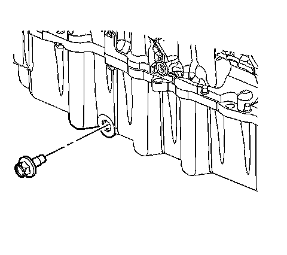
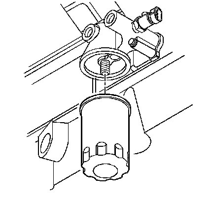

Oil Filter: Service and Repair
Engine Oil and Oil Filter Replacement
Removal Procedure
1. Raise and support the vehicle. Refer to Lifting and Jacking the Vehicle (Service and Repair) .
2. Position the oil drain pan under the engine oil drain plug.

3. Remove the engine oil drain plug.
4. Clean and inspect the engine oil drain plug, replace if necessary.
5. Clean and inspect the engine oil drain plug sealing surface on the oil pan, repair or replace oil pan if necessary.

6. Remove the oil filter.
7. Clean and inspect the oil filter sealing area on the oil filter adapter, repair or replace if necessary.
Installation Procedure
1. Fill the oil filter with oil.
2. Lightly oil the replacement oil filter gasket with clean oil.
Notice: Refer to Fastener Notice .
3. Install the new oil filter.
Tighten the new oil filter to 3/4 to 1 full turn, after the oil filter gasket contacts the oil filter mounting surface.
4. Install the engine oil drain plug.
Tighten the engine oil drain plug to 20 N.m (15 lb ft).
5. Lower the vehicle.
6. Fill the engine with new engine oil. Refer to Fluid and Lubricant Recommendations ([1][2]Fluid Type Specifications) and Approximate Fluid Capacities (Capacity Specifications) .
7. Inspect for oil leaks after engine start up.
8. Reset the oil life monitor. Refer to GM Oil Life System Resetting (Service and Repair) .